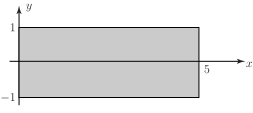

4 Integration over rectangular areas
Consider the double integral
This represents an integral over the rectangle shown below.
Figure 5

Here, the inner integral is
and the outer integral is
Looking in more detail at the inner integral
the function can be integrated with respect to (keeping constant) to give (where is a constant and can be omitted as the integral is a definite integral) i.e.
This is a function of as expected. This inner integral can be placed into the outer integral to get
which becomes
Hence the double integral
Key Point 2
Double Integral
When evaluating a double integral, evaluate the inner integral first and substitute the result into the outer integral.
Example 1
Evaluate the double integral
This integral is evaluated over the area shown below.
Figure 6
Solution
Here, the inner integral is
and hence the outer integral is
Example 2
Use the above approach to evaluate the double integral
Note that the limits are the same as in a previous case but that the function itself has changed.
Solution
The inner integral is
so the outer integral becomes
Clearly, variables other than and may be used.
Example 3
Evaluate the double integral
Solution
This integral becomes (dispensing with the step of formally writing the inner integral),
Clearly, evaluating the integrals can involve further tools of integration, e.g. integration by parts or by substitution.
Example 4
Evaluate the double integral
Here, the limits have not formally been linked with a variable name but the limits on the outer integral apply to and the limits on the inner integral apply to As the integrations are more complicated, the inner integral will be evaluated explicitly.
Solution
which can be evaluated by means of the substitution
If
then
so
.
Also if
then
and if
then
So the inner integral becomes (remembering that
may be treated as a constant)
and so the double integral becomes
which can be evaluated by integration by parts.
Task!
Evaluate the following double integral.
The inner integral
This can be put in the outer integral to give
Exercises
Evaluate the following double integrals over rectangular areas.
- (Requires integration by substitution.)
- (Requires integration by parts.)
- 1,
- 460/3,
- 0,
- 16,
- 9/2,